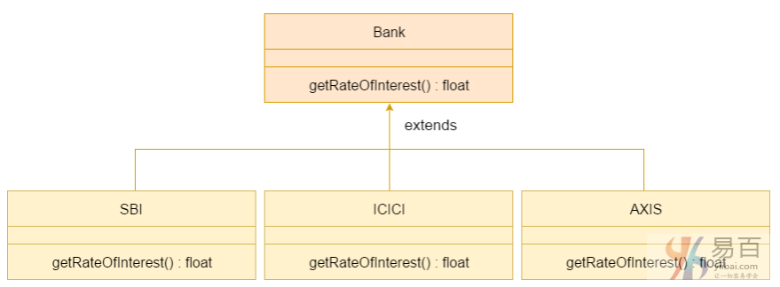

☰ 目录
33 多态
Java中的多态是一个概念，通过它我们可以通过不同的方式执行单个动作(方法)。 多态性派生自2个希腊词：“poly”和“morphs”。 词语“poly”意为许多，“morphs”意为形式。 所以多态表示为多种形式。
在Java中有两种类型的多态性：编译时多态性和运行时多态性。 我们可以通过方法重载和方法覆盖在java中执行多态性。
如果在Java中重载静态方法，它就是编译时多态性的例子。 这里，我们将关注Java中的运行时多态性。
1. Java运行时多态性
运行时多态性或动态方法分派是一个过程，它对重写方法的调用在运行时体现而不是编译时。
在此过程中，通过超类的引用变量调用重写的方法。 要调用的方法基于引用的对象。
了解运行时多态性之前，让我们先来向上转换。
向上转换
当父类的引用变量引用子类的对象时，称为向上转换。 例如：
class A{}
class B extends A{}
A a=new B(); //向上转换...
Java运行时多态性示例1
在这个例子中，我们创建两个类：Bike和Splendar。 Splendar类扩展Bike类并覆盖其run()方法。通过父类(Bike)的引用变量调用run方法。 因为它引用子类对象，并且子类方法覆盖父类方法，子类方法在运行时被调用。
因为方法调用是由JVM不是编译器决定的，所以它被称为运行时多态性。
class Bike {
void run() {
System.out.println("running");
}
}
class Splender extends Bike {
void run() {
System.out.println("running safely with 60km");
}
public static void main(String args[]) {
Bike b = new Splender();// upcasting - 向上转换
b.run();
}
}
执行上面代码得到以下结果 -
running safely with 60km.
Java运行时多态性示例2：Bank
考虑一种情况，Bank类是一个提供获得利率的方法的类。 但是，利率可能因银行而异。 例如，SBI，ICICI和AXIS银行分别提供8.4％，7.3％和9.7％的利率。

注意：此示例也在方法覆盖中给出，但没有向上转换。
class Bank {
float getRateOfInterest() {
return 0;
}
}
class SBI extends Bank {
float getRateOfInterest() {
return 8.4f;
}
}
class ICICI extends Bank {
float getRateOfInterest() {
return 7.3f;
}
}
class AXIS extends Bank {
float getRateOfInterest() {
return 9.7f;
}
}
class TestPolymorphism {
public static void main(String args[]) {
Bank b;
b = new SBI();
System.out.println("SBI Rate of Interest: " + b.getRateOfInterest());
b = new ICICI();
System.out.println("ICICI Rate of Interest: " + b.getRateOfInterest());
b = new AXIS();
System.out.println("AXIS Rate of Interest: " + b.getRateOfInterest());
}
}
上面代码执行结果如下 -
SBI Rate of Interest: 8.4
ICICI Rate of Interest: 7.3
AXIS Rate of Interest: 9.7
Java运行时多态性示例3：Shape
class Shape { // 基类(形状)
void draw() {
System.out.println("drawing...");
}
}
class Rectangle extends Shape {
void draw() {
System.out.println("drawing rectangle...");
}
}
class Circle extends Shape {
void draw() {
System.out.println("drawing circle...");
}
}
class Triangle extends Shape {
void draw() {
System.out.println("drawing triangle...");
}
}
class TestPolymorphism2 {
public static void main(String args[]) {
Shape s;
s = new Rectangle();
s.draw();
s = new Circle();
s.draw();
s = new Triangle();
s.draw();
}
}
上面代码执行结果如下 -
SBI Rate of Interest: 8.4
ICICI Rate of Interest: 7.3
AXIS Rate of Interest: 9.7
Java运行时多态性示例4：Animal
class Animal {
void eat() {
System.out.println("eating...");
}
}
class Dog extends Animal {
void eat() {
System.out.println("eating bread...");
}
}
class Cat extends Animal {
void eat() {
System.out.println("eating rat...");
}
}
class Lion extends Animal {
void eat() {
System.out.println("eating meat...");
}
}
class TestPolymorphism3 {
public static void main(String[] args) {
Animal a;
a = new Dog();
a.eat();
a = new Cat();
a.eat();
a = new Lion();
a.eat();
}
}
上面代码执行结果如下 -
eating bread...
eating rat...
eating meat...
Java运行时多态性与数据成员
上面示例中，都是有关方法被覆盖而不是数据成员，因此运行时多态性不能由数据成员实现。
在下面给出的例子中，这两个类都有一个数据成员:speedlimit，通过引用子类对象的父类的引用变量来访问数据成员。 由于我们访问的数据成员没有被重写，因此它将访问父类的数据成员。
规则： 运行时多态性不能由数据成员实现。
class Bike {
int speedlimit = 90;
}
class Honda3 extends Bike {
int speedlimit = 150;
public static void main(String args[]){
Bike obj=new Honda3();
System.out.println(obj.speedlimit);//90
}
}
上面代码执行结果如下 -
90
Java运行时多态性与多级继承
下面让我们来看看一个带有多级继承的运行时多态性的简单例子。
class Animal {
void eat() {
System.out.println("eating");
}
}
class Dog extends Animal {
void eat() {
System.out.println("eating fruits");
}
}
class BabyDog extends Dog {
void eat() {
System.out.println("drinking milk");
}
public static void main(String args[]) {
Animal a1, a2, a3;
a1 = new Animal();
a2 = new Dog();
a3 = new BabyDog();
a1.eat();
a2.eat();
a3.eat();
}
}
上面代码执行结果如下 -
eating
eating fruits
drinking Milk
尝试下面一段代码的输出：
class Animal {
void eat() {
System.out.println("animal is eating...");
}
}
class Dog extends Animal {
void eat() {
System.out.println("dog is eating...");
}
}
class BabyDog1 extends Dog {
public static void main(String args[]) {
Animal a = new BabyDog1();
a.eat();
}
}
执行上述代码，结果如下：
Dog is eating
因为，BabyDog不会覆盖eat()方法，所以这里是Dog类的eat()方法被调用。